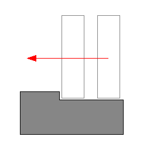
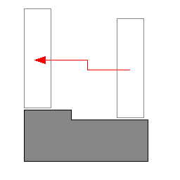
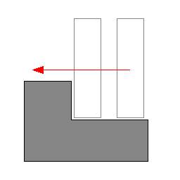

The goal of the character controller SDK is to provide users with a default character controller built on top of the NVIDIA PhysX SDK. Roughly it has to support two things:
This covers a very high number of features, which can be implemented in numerous ways. The goal is not to implement all of them (which would be a daunting task), the goal is to give a default/sample implementation that people can use as a starting point. For example the character's bounding volume could in theory be anything, from a box to an inverted pyramid. We will not implement all of them. In our initial implementation we support two common bounding volumes: an AABB and a capsule.
One might wonder why we did not use the physics engine directly to implement the character controller. Here is the story.
In the past games did not use 'real' physics engines. However they still used a character controller to move a player in a level. These games, such as Quake or even Doom, had a dedicated, customized piece of code to implement collision detection and response, which was often the only piece of physics in the whole game. It actually had little physics, but a lot of carefully tweaked values to provide a good feeling while controlling the player. The particular behavior it implemented is often called the 'collide and slide' algorithm, and it has been 'tweaked for more than a decade'. The result is that players expect to find the same well-known behavior in new games, and providing them with anything else is often dangerous. This is especially true if provided behavior is not as robust and stable as before. And this is exactly what happens if you use a typical physics engine directly, to control players.
In particular, here is a (non exhaustive) list of typical problems you run into when using a physics engine for character controllers:
(lack of) continuous collision detection: Typical physics engines use discrete collision checks, leading to the notorious 'tunneling effect' that has plagued various commercial & non-commercial physics packages for years. This leads to three main problems:
- the tunneling effect itself : if your character goes too fast it might tunnel through a wall
- as a consequence, the maximum velocity of your character might be limited (hence also limiting the game play possibilities)
- even if you do not tunnel, the character might jitter when pushed forward in a corner for example, because the engine keeps moving it back and forth to slightly different positions.
No direct control: a rigid body is typically controlled with impulses or forces. It is usually not possible to move it directly to its final position, you first have to convert the delta position vector to impulses/forces, apply them, and hope that the character will be where you wanted it to be as a result. Usually it does not work too well, in particular when the physics engine uses an imperfect linear solver.
Trouble with friction: When the character is standing on a ramp, you do not want it to slide. You want infinite friction here. When the character is moving forward on that same ramp, you do not want it to slow down. You want no friction here. When the character is sliding against a wall, you do not want it to slow down either. You want no friction here as well. Usually it is either 0 or infinite. However the friction model might not be perfect, and what you actually get is very little friction (you can still feel the character slowing down) or a very-big-but-not-infinite one (the character slides very slowly on that ramp no matter how artificially big the friction parameters are). The conflicting requirements for ramps also mean that usually there is simply no way to perfectly model desired behavior.
Trouble with restitution: You should avoid restitution. When the character moves fast and collides with a wall, you do not want it to bounce away from it. When the character falls from a height and lands on the ground, flexing his legs, you definitely do not want any bounce to happen. But once again, even when the restitution is exactly zero, you can nonetheless sometimes get a small bump. This is not only related to the imperfect nature of the linear solver, it also has to do with how typical penetration-depth-based engines recover from overlap situations, sometimes applying excessive forces that separate the objects too much.
Undesired jumps: You often want a character to stick to the ground, no matter what the physical behavior should be. For example characters in action games tend to move fast, at unrealistic speeds. When they reach the top of a ramp, the physics engine often makes them jump a bit, in the same way a fast car would jump in the streets of San Francisco. But that is often not what you want: you want the character to stick to the ground regardless of its current velocity. This is sometimes implemented using fixed joints, which is an excessively complex solution to a very simple problem that can been solved without the complexity of a physics engine.
Undesired rotations: Finally, a character is always standing up and never rotating. However physics engines often have poor support for that sort of constraints, and a great deal of effort is often put into preventing a capsule around the character from falling (it should always stands up on its tip). This is again often implemented using artificial joints, and the resulting system is neither very robust nor very fast.
To summarize, a lot of effort can be spent on tweaking and disabling the physics engine's features simply to emulate what's otherwise a much less complex piece of custom code. It is natural to instead keep using that simple piece of custom code.
You first have to decide what bounding volume you want around your characters. At the time of writing, only boxes (PxBoxController) and capsules (PxCapsuleController) are supported.
Then you need to create a controller manager somewhere in your app. You only need one of them; it will keep track of all created controllers and allow your character to interact with other characters created by the same manager. You can create this manager using the PxCreateControllerManager function:
PxFoundation* foundation; // Previously created Foundation object
PxControllerManager* manager = PxCreateControllerManager(*foundation);
Then you create one controller for each movable character in the game. This is done like this, for a capsule controller:
PxPhysics& sdk; // Previously created PxPhysics object
PxScene* scene; // Previously created scene
PxCapsuleControllerDesc desc;
<fill the descriptor here>
PxController* c = manager->createController(sdk, scene, desc);
Each frame, move your characters using the following function:
PxU32 collisionFlags = PxController::move(const PxVec3& disp, PxF32 minDist, PxF32 elapsedTime, const PxControllerFilters& filters, const PxObstacleContext* obstacles=NULL);
disp is the displacement vector for current frame. It is typically a combination of vertical motion due to gravity and lateral motion when your character is moving. Note that this is a displacement vector, i.e. a first order control. This is not an impulse vector (2nd order control) or a force (3rd order control). Please also note that users are responsible for applying gravity to characters here.
minDist is a minimal length used to stop the recursive displacement algorithm early when remaining distance to travel goes below this limit.
elapsedTime is the amount of time that passed since the last call to the move function.
filters are filtering parameters similar to the ones used in the SDK. These allow customization of filtering and control what the character is colliding with.
obstacles are optional, additional obstacles that the character should collide with. Those objects are fully controlled by users and do not need to have counterpart SDK objects.
collisionFlags is a bit mask returned to users to define collision events that happened during the move. This is a combination of PxControllerFlag flags. It can be used to trigger various character animations. For example your character might be falling while playing a falling idle animation, and you might start the land animation as soon as PxControllerFlag::eCOLLISION_DOWN is returned.
Sometimes it is convenient to create additional obstacles for the CCT to collide with, without creating an actual SDK object. This is useful in a number of situations. For example:
At the time of writing the character controller supports box and capsule PxObstacle objects, namely PxBoxObstacle and PxCapsuleObstacle. To create those, first create a PxObstacleContext object using the following function:
PxObstacleContext* PxControllerManager::createObstacleContext() = 0;
Then manage obstacles with:
ObstacleHandle PxObstacleContext::addObstacle(const PxObstacle& obstacle) = 0;
bool PxObstacleContext::removeObstacle(ObstacleHandle handle) = 0;
bool PxObstacleContext::updateObstacle(ObstacleHandle handle, const PxObstacle& obstacle) = 0;
Typically updateObstacle is called right before the controllers' move calls.
Each frame, you need to keep your graphics object in sync with the position of the character controller. You can access a controller's position using:
const PxExtendedVec3& PxController::getPosition() const;
This function returns the position from the center of the collision shape, since this is what is used internally both within the PhysX SDK and by usual graphics APIs. So if you just use this position in your world matrix and pass this to the renderer, the character should collide and slide smoothly against the world. This is illustrated in SampleBridges. Note that the position uses double-accuracy, to make the CCT module work well with large worlds. Also note that a controller never rotates so you can only access its position.
Alternative helper functions are provided if you need to work using the character's bottom position, a.k.a. the foot position:
const PxExtendedVec3& PxController::getFootPosition() const;
bool PxController::setFootPosition(const PxExtendedVec3& position);
The character uses a bounding volume that is independent from already existing shapes in the SDK. That way we are free to implement a dedicated collision volume for the character controller (e.g. an ellipsoid), even if the corresponding physics shape does not exist.
We currently support two different shapes around the character:
Note: In versions prior to 2.3 there was an PxSphereController, this has been removed since the PxCapsuleController is more robust and provides the same functionality (zero length capsule).
A small skin is maintained around the character's volume, to avoid numerical issues that would otherwise happen if we let it touch other shapes. The size of this skin is user-defined. If you render the character's volume for debug purpose, remember to expand the volume by the size of this skin to get accurate debug visualization. This skin is defined in PxControllerDesc::contactOffset and later available through the PxController::getContactOffset() function.
Without auto-stepping it is easy for a box-controlled character to get stuck against slight elevations of the ground mesh. In the following picture the small step would stop the character completely. It feels unnatural because in the real world you would just cross this small obstacle without thinking about it.
This is what auto-stepping enables us to do. Without any intervention from the player (i.e. without him thinking about it) the box correctly steps above the minor obstacle.
However if the obstacle is too big, i.e. its height is greater than the stepOffset parameter, the controller can not climb automatically, and the character gets stuck (correctly this time):
'Climbing' (over this bigger obstacle, for example) may also be implemented in the future, as an extension of auto-stepping. The step offset is defined in PxControllerDesc::stepOffset and later available through the PxController::getStepOffset() function.
In order to implement the auto-stepping feature, the SDK needs to know about your 'up' vector. The up vector is defined in PxControllerDesc::upDirection and later available through the PxController::getUpDirection() function.
By default the character can move anywhere. This is not what you usually want. In particular, you often want to disallow walking on polygons whose slope is high. The SDK can do this automatically thanks to a user-defined slope limit. All polygons whose slope is higher than the limit slope will be marked as non walk-able, and the SDK will not let characters go there.
In the future it may be possible to tag each triangle of a mesh as walk-able or not. (This is not implemented yet)
Two modes are available to select what happens when touching a non walk-able part. The desired mode is selected with the PxControllerDesc::nonWalkableMode enum. PxCCTNonWalkableMode::ePREVENT_CLIMBING prevents the character from moving up a slope, but does not move the character otherwise. PxCCTNonWalkableMode::eFORCE_SLIDING forces characters to slide down non walk-able slopes.
The slope limit is defined in PxControllerDesc::slopeLimit and later available through the PxController::getSlopeLimit() function.
The limit is expressed as the cosine of desired limit angle. For example this uses a slope limit of 45 degrees:
slopeLimit = cosf(PxMath::degToRad(45.0f));
If you use slopeLimit = 0.0f, the feature is automatically disabled (i.e. you can go anywhere).
This feature is not always needed. A common strategy is to disable it and place invisible walls in the level, to restrict player's movements. The character module can also create those walls for you, if PxControllerDesc::invisibleWallHeight is non-zero. In this case the library creates those extra triangles on the fly, and that parameter controls their height (extruded in the user-defined up direction). A common problem is that those invisible walls are only created when non-walkable triangles are found. It is possible for a jumping character to go over them, if its bounding volume is too small and does not collide with the non-walkable triangles below him. The PxControllerDesc::maxJumpHeight parameter addresses this issue, by extending the size of the bounding volume downward. That way all potentially non-walkable triangles are properly returned by the collision queries, and invisible walls are properly created - preventing the character from jumping on them.
The slope limit is ignored if the touched shape is attached to a dynamic or kinematic rigid body. Further, the slope limit is ignored if the touched shape is a sphere or capsule attached to a static body. Extraction of a contact normal from heightfields, triangle meshes, convex meshes and boxes is more readily supported than with spheres and capsules so these shape types are all involved in the slope limit calculations, provided they are attached to a static body.
Sometimes it is useful to change the size of the character's volume at runtime. For example if your character can crouch, you might want to reduce the height of its bounding volume so that it can then move to places he could not reach otherwise.
The character library supports runtime volume updates. However volumes are directly modified without any extra tests, so it might happen that the resulting volume overlaps some geometry nearby. To avoid this you must first use the already existing 'placement API' from the SDK, to check that the volume of space you want to occupy is actually empty. Only then can you increase the size of the character's volume.
Related functions for the AABB:
bool PxBoxController::setHalfHeight(PxF32 halfHeight) = 0;
bool PxBoxController::setHalfSideExtent(PxF32 halfSideExtent) = 0;
bool PxBoxController::setHalfForwardExtent(PxF32 halfForwardExtent) = 0;
Related functions for the capsule:
bool PxCapsuleController::setRadius(PxF32 radius) = 0;
bool PxCapsuleController::setHeight(PxF32 height) = 0;
Related 'placement API' function:
bool PxScene::overlapAny(...) = 0;
It is important to keep in mind that changing the size of a controller using those functions does not actually change its position. So if your character is standing on the ground (touching it), and you suddenly reduce its height without updating its position, the character will end up levitating above the ground for a few frames until gravity makes it fall and touch the ground again. This happens because the controllers positions are located at the center of the shapes, rather than the bottom. Thus, to modify a controller's height and preserve its bottom position, one must change both the height and position of a controller. The following helper function does that automatically:
void PxController::resize(PxF32 height) = 0;
Updating the character's volume at runtime to implement a 'crouch' motion is illustrated in SampleNorthPole.
You can define a PxUserControllerHitReport callback that will let you retrieve some information about controller's evolution. In particular, it is possible to get called when the character hits a shape, another character, or a user-defined obstacle object.
When the character hits a shape, the onShapeHit callback is called - for both static and dynamic shapes. Various impact parameters are sent to the callback, and they can then be used in your application to do various things like playing sounds, rendering trails, applying forces, and so on.
When the character hits another character, i.e. another object controlled by a character controller, the onControllerHit callback is called. This happens when the player collides with an NPC, for example.
When the character hits a user-defined obstacle, the onObstacleHit callback is called.
You can define a PxControllerBehaviorCallback callback that will let you customize the character's behavior after touching a PxShape, a PxController, or a PxObstacle. This is done using the following functions:
PxU32 PxControllerBehaviorCallback::getBehaviorFlags(const PxShape& shape) = 0;
PxU32 PxControllerBehaviorCallback::getBehaviorFlags(const PxController& controller) = 0;
PxU32 PxControllerBehaviorCallback::getBehaviorFlags(const PxObstacle& obstacle) = 0;
Returned PxU32 should be a combination of PxControllerBehaviorFlag. At the time of writing the following flags are supported:
PxControllerBehaviorFlag::eCCT_CAN_RIDE_ON_OBJECT defines if the character can effectively travel with the object it is standing on. For example a character standing on a dynamic bridge should follow the motion of the PxShape it is standing on. But it should not be the case if the character stands on, say a PxShape bottle rolling on the ground.
PxControllerBehaviorFlag::eCCT_SLIDE defines if the character should slide or not when standing on the object. This can be used as an alternative to the previously discussed slope limit feature, to define non walk-able objects rather than non-walkable parts. It can also be used to make a capsule character fall off a platform's edge automatically, when the center of the capsule crosses the platform's edge.
It is tempting to let the physics engine push objects by applying forces at contact points. However it is often not good for game play. The bounding volume around characters are artificial (boxes, spheres, etc) and you do not want the pushing effect to change when you switch from a box controller to a capsule controller. You usually want a pushing effect dictated by game play. So it might actually be better to apply artificial forces to objects in the onShapeHit callback. It is also difficult to push a box forward with a capsule: since you never hit the box exactly in the middle, applied force tends to rotate it - even if all you want is to push it in a straight line. Thus the recommended approach so far is to use custom code inside the callback to push away dynamic objects.
Actors used internally by the character controller library follow the same rules as any other PhysX objects. In particular, they are updated using fixed or variable timesteps. This can be troublesome because the PxController objects are otherwise typically updated using variable time steps (usually using the elapsed time between two rendering frames). So the PxController objects are not always perfectly in sync with their kinematic actors when using fixed time steps.
The character controller library caches the geometry around each character, in order to speed up collision queries. In PhysX 3.3 and above, those caches should be automatically invalidated when a cached object gets updated. However it is also possible to manually flush those caches using the following function:
void PxController::invalidateCache();
It might be necessary do to so when changing the filtering parameters between calls to PxController::move().